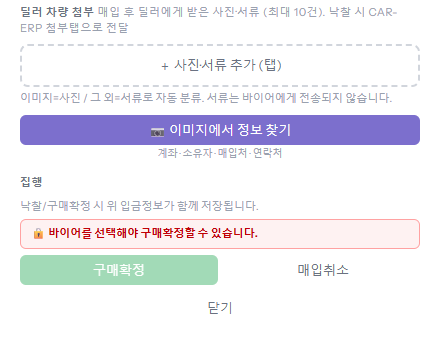
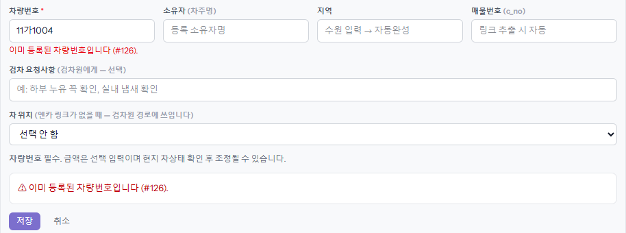

board 는 실수로 ERP 에 잘못 넘어가지 않게 일부러 막는 곳이 많습니다. 막히면 거의 항상 빨간 글씨로 이유가 적혀 있습니다.
이 장은 그 글씨를 어디서 찾고, 자주 나오는 말이 무슨 뜻인지 모은 것입니다.
① 빨간 안내 찾는 법
1
버튼이 흐리게 안 눌리면 — 바로 위 빨간 줄
버튼을 누를 수 없는 상태면 버튼이 흐려지고, 그 바로 위에 🔒 와 함께 이유가 나옵니다. 그 이유를 해결하면 버튼이 살아납니다. 예시는 바이어를 안 고른 차의 [구매확정]입니다. 위쪽 「바이어 선택」에서 바이어를 고르면 눌립니다.

2
눌렀는데 저장이 안 되면 — 그 칸 아래와 버튼 위
틀린 칸 바로 아래 빨간 글씨가 생기고, 저장 버튼 위에도 ⚠ 로 한 번 더 나옵니다. 오른쪽 창(드로어)에서는 화면이 빨간 글씨 쪽으로 저절로 내려갑니다. 예시는 이미 등록된 차량번호로 다시 등록한 경우입니다(괄호 안 #126 = 이미 있는 그 차).

3
요청 결과가 「거절」이면 — 칩과 종
ERP 가 요청을 거절하면 빨간 「거절 ⓘ」 칩이 붙고, 위쪽 종에도 사유가 빨간 글씨로 옵니다. 칩을 누르면 사유·금액이 펼쳐집니다(「입금요청」 장).
② 자주 막히는 곳
매입예정
등록·수정·삭제
- 「이미 등록된 차량번호입니다 (#번호)」 — 같은 차가 board 에 있습니다. 거절로 끝난 차도 남아 있어 막힙니다. 다시 하려면 그 차를 지우고 등록하거나, 관리에게 상태를 되돌려 달라고 합니다(「관리자 화면에서 고치기」).
- 「🔨 경매 등록 마감됨」 — 경매 출처는 평일 오전 10시가 지나면 등록이 막힙니다. 엔카는 언제든 됩니다. 꼭 필요하면 관리자에게 해제를 부탁합니다.
- 삭제 버튼이 안 보인다 — 내가 등록한 차이고 ERP 로 넘어가기 전(구매확정 전)이어야 보입니다. 그 밖의 차는 관리가 「관리자」 화면에서 지웁니다.
구매확정
경매/구매 창의 [구매확정]
- 「바이어를 선택해야 구매확정할 수 있습니다」 — 바이어를 고릅니다. 아직 바이어가 없는 차면 「재고매입(바이어 미정)」을 체크합니다(「재고매입 (바이어 미정)」 장).
- 「이 바이어는 매입 등록이 막혀 있습니다」(🔒 바이어) — 그 바이어의 미수가 한도를 넘어 ERP 가 잠근 것입니다. ERP 관리자 승인 뒤에 됩니다. board 에서 풀 수 없습니다.
- 「차량 사진·서류를 최소 1건 첨부해야…」 — 딜러에게 받은 사진·서류를 1장 이상 올립니다.
- 차값·총판매가·판매가·견적통화·환율 USD 를 넣으라는 말 — 그 칸을 채웁니다. 비워 두면 ERP 에 판매 정보가 빈 채로 생기기 때문에 막는 것입니다.
- 「첨부사진에서 정보를 찾는 중입니다」 — 사진에서 계좌를 읽는 중이라 20초쯤 막힙니다. 기다리거나 [계좌 없이 확정하기].
포털
내 정산·미수(포털)
- 「재전송 한도(5회)에 도달했습니다」 — 같은 요청을 다섯 번 다시 보냈습니다. ERP 에서 확인·거절되면 새로 보낼 수 있습니다. 급하면 받는 사람에게 직접 말합니다.
- 「조회 전용」 — 다른 사람의 포털을 보고 있는 것입니다. 요청·선적요청은 그 영업 본인(또는 그 영업이 공유해 준 관리)이 보냅니다.
- 「기존 묶음의 바이어 정보(buyer_id)가 응답에 없어 선적요청을 막았습니다」 — ERP 쪽 묶음에 바이어가 빠져 있습니다. 내가 고칠 수 없으니 ERP 담당에게 그 묶음 바이어를 채워 달라고 합니다.
- 포털이 비어 보인다 — 계정의 ERP 영업 연결을 관리에게 확인합니다(「사용자 관리」).
결재
업무일지·클레임
- 업무일지 「결재선에 부장·상무·대표가 한 명도 지정되지 않아 상신할 수 없습니다」 — 시스템관리자에게 결재 직급 지정을 부탁합니다.
- 클레임 「14일 초과」 — 도착 뒤 14일이 지난 건은 「기한 초과 처리 사유」를 적어야 결재 요청이 됩니다.
③ 화면이 아예 안 열릴 때
4
「403 FORBIDDEN」 — 내 역할로는 못 여는 화면
메뉴에 없는 화면 주소로 들어갔거나, 계정이 비활성으로 바뀐 것입니다. 왼쪽 메뉴에 있는 화면으로 다시 들어가고, 원래 쓰던 화면인데 이렇게 나오면 관리에게 계정 상태를 확인합니다.
그래도 안 되면
- 화면을 오래 열어 두었다면 새로고침부터 합니다. 오래된 화면은 버튼을 눌러도 반응이 없을 수 있습니다.
- 빨간 글씨가 없는데 안 되면, 차량번호·누른 버튼·시각을 적어 관리에게 알립니다. 관리는 「감사 로그」에서 그 시각의 기록을 찾아볼 수 있습니다.